2012 Holiday Web Page

| Erich and Margie's 2012 Holiday Web Page | |
December We enjoyed one of Guen and Michele's best solstice celebrations yet. On Christmas day, we took Gamble to a dog beach for the first time. He enjoyed the sand and the other dogs, but he was a little freaked out that he couldn't walk on water. Our friends Linda and Deborah from Atlanta brought their two dachshunds for a sleepover. Gamble was territorial, but mellowed out after we went to Blue Spring State Park and a dog park with lots of other dogs. We skipped hosting our annual New Year's Eve party, but Michael and Deborah took up the slack and it was a lovely evening.
January Erich watched no fewer than 8 football games on New Year's Day. Our friends Lynn and Chris came to visit to meet Gamble. We went with them a week later to see Marcia Ball in concert. One of Erich's advisees drowned. An art exhibition in Denmark featured results from Erich's packing pages. We attended Barb's annual Chinese New Year celebration. We saw our transgendered friend Chris again after many years.
February The Hestevolds won the award for latest Christmas letter, again. We decided to celebrate Gamble's first birthday on Feb 2, renaming it "Hounddog Day". Erich's two least favorite teams played in the Super Bowl. We saw a music recital at Stetson that was so bad that we treated ourselves to desserts at two different restaurants afterwards. Erich caught one of his poker buddies cheating. We travelled to Gainesville with Guen and Michele to see Emily Kopp open for Brandi Carlile. We attended a "Spice Dinner" at Regina and Michael's place. One of Erich's students celebrated his fifth birthday on the last day of the month.
March Gamble went to his first baseball game. We enjoyed attending a games party, where we played the new games we got for Christmas. Gamble howled in his sleep. Stetson began the baseball season well, going 15-3, and being ranked 14th in the country, before falling back to earth. We went with a gang of friends to see Lyle Lovett and John Hiatt at the St. Augustine amphitheater. For some reason, the bagger at the grocery store didn't put our ground beef in a bag, but just put it in our cart separate from everything else.
April We got passports. We had some friends over for a games/birthday/Easter party. For the first time ever, Erich had croutons at two different meals in one day. We bought 630-count bedsheets for the first time. Gamble learned how to do an agility ramp at a local dog park. We went to see a film at the Florida film festival with Missy. Erich's calculus teacher in high school died. Another owl visited our yard. Margie's web page on teaching was translated into Romanian and Polish. The department had a pool party. We went to see our friend Chris Burns at his second CD release party. Erich watched 4 seasons of the animated "Clone Wars".
May Margie's friend Dot, her partner, and her mother stayed the night on their Florida vacation. A "graduating" senior failed one of Erich's classes by 7 points. Erich started his 15-month sabbatical. Margie is still retired. Stetson's baseball team beat the #1 ranked team in the country. We held the third annual mini-golf tournament, with Miguel winning as usual. We had Gamble's DNA tested - you can see the results here. On the same day that Margie was called for jury duty, earning $15 for 7 hours of boredom, Gamble learned to swim at doggie daycare. Erich did something he hadn't done for 30 years: babysit.
June We watched 3 years of "The Good Wife". Margie befriended our mayor at the dog park. We celebrated Missy's birthday with a games party. We attended a going-away party for Guen. A tree outside our fence fell and leaned against another tree inside our fence, requiring us to cut it down. We saw The Black Lillies in concert. The opening act was Have Gun, Will Travel, whose name really should have been "Have Cliche, Will Write a Song About It".
July Gamble rode his first elevator. We watched 3 years of "The Big C". Erich's friend Barbara visited: we hosted a games party, visited our friend Lynn, played with Gamble, walked on the beach, and saw a hawk catch a squirrel. We celebrated our 25th anniversary with an A+ meal and a B movie. The air conditioning was out in the theater, so we took off our socks and shoes. Erich sold $700 worth of puzzles to a British company for use in an upcoming tablet game. Erich began his first diet/exercise program ever.
August Erich watched entirely too much olympic coverage. We went to see Chris Burns and Emily Kopp in concert. Chris even gave us a shout out from the stage. Erich had two puzzles used in the U.S. Puzzle Championship, and two other puzzles used in the U.K. Puzzle Championship. On a walk, Erich talked to a man extolling the taste of raccoon meat.
September Erich watched 5 seasons of "Californication". Margie visited the Sanford zoo. In order to diagnose some back pain, Gamble had a series of x-rays. At a dog show, Gamble ran the lure course in 15.85 seconds. Another hawk visited the yard. We spotted a skink on our house. We passed a pick-up truck with a deer head mounted to the windshield.
October Gamble had his first encounter with a coral snake. We hosted a debate party, where guests threw marshmallows at candidates saying stupid things. We tried Greek yogurt for the first time. We went to St. Louis for Erich's 25th college reunion. Highlights included the 10-story slide at the City Museum, seeing a real-life police car chase, the bonfire, a game of Cards Against Humanity, a drunken ping-pong tournament and a sober disc golf match, and getting to better know the children of Erich's college friends. When we returned, we saw John Hiatt in concert. We attended Miguel and Regina's Panama show-and-tell potluck dinner. We watched the Stetson baseball team demolish the Canadian Junior Team, and Erich got sunburned at the game. We got 8 phone calls from political pollsters. Erich learned an algorithm to find what day of the week a date is. We went to Minnesota Avenue for Halloween, and took these pictures.
November We celebrated the one year anniversary of getting Gamble. We hosted an election night party. A bear visited our driveway, and the neighbors got a picture! We went to see a concert by Rickie Lee Jones, who still had her voice but not her mind. Our friends Kel, Jules, and Kelvin visited, and got together with Rob to play disc golf, have lunch, and peruse the Deland Art Festival. We played mah jongg with Missy and Barb. Later that week they joined us and Kelly, Juliette, and Kelvin for Thanksgiving dinner. Gamble almost got a turkey dinner of his own when some turkeys visited our yard a few days later. We went back to the dog beach, which Gamble appreciated much more this time. A coyote visited our neighbor's yard. Erich finished the rough draft of his sabbatical project.
December Gamble attended a doggie birthday party, and shredded his party favor in minutes. And it came up 5 days later. We went to DeLand's Christmas parade. Margie found a brown widow spider in our back yard. We saw Emily Kopp open for Iris Dement. Gamble and Margie found a kitten on a walk. While taking it to the Daytona Humane Society, it escaped its bondage, and climbed on Margie while she was driving on the interstate. Erich was approached to write a series of electronic puzzle books for the iPhone and iPad. We celebrated the Winter Solstice by hosting a dinner party. We plan to celebrate Christmas Day at the doggie beach, and we look forward to catching up with Erin and Lynn next week. On his diet, Erich lost 12% of his body weight. We didn't use our passports, but started planning a trip to Costa Rica.
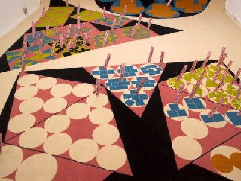 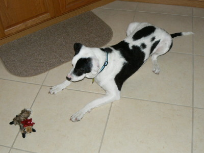 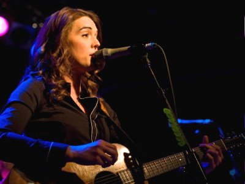 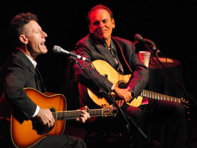 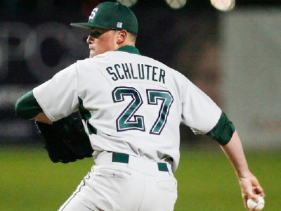 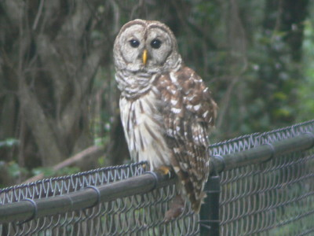 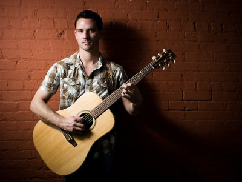 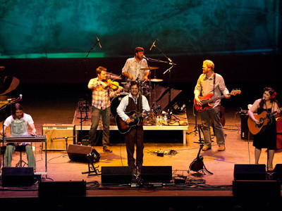 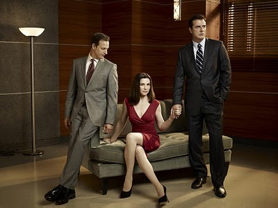 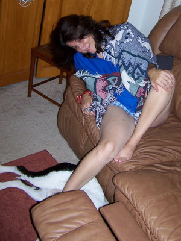 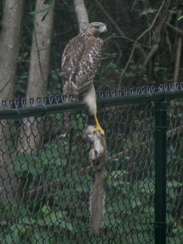 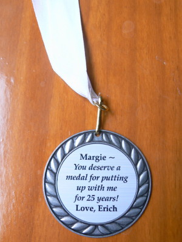 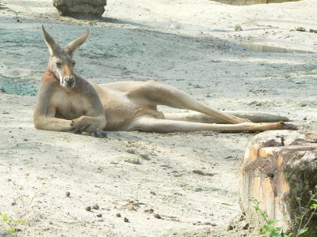 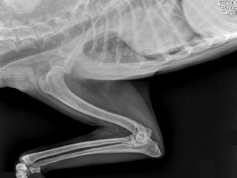 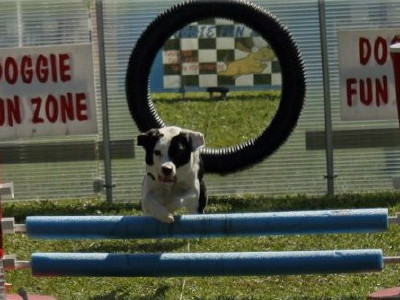 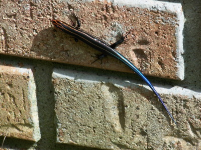 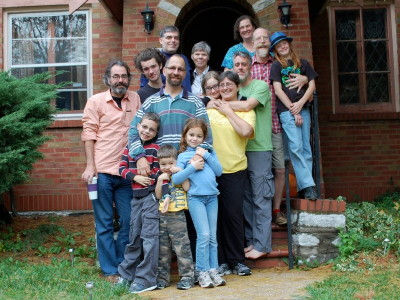 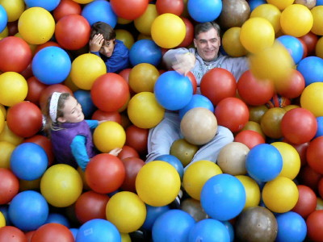 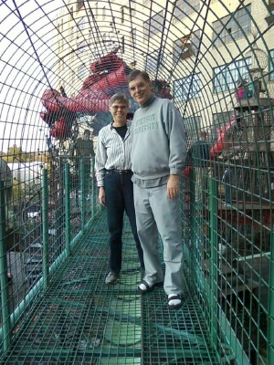 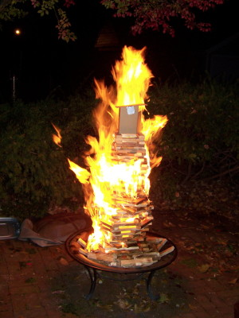 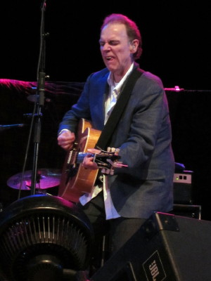 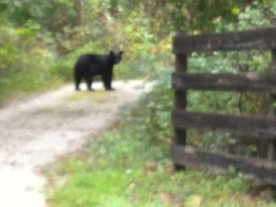 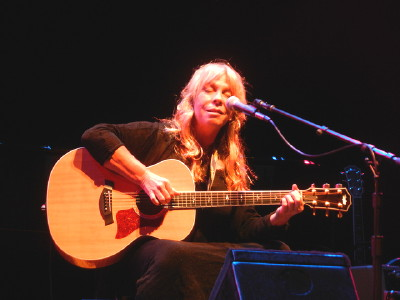 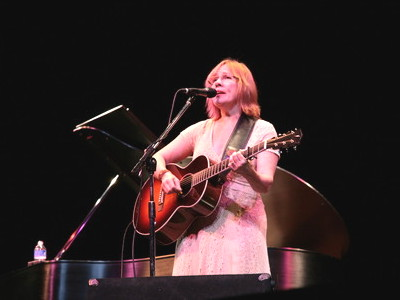 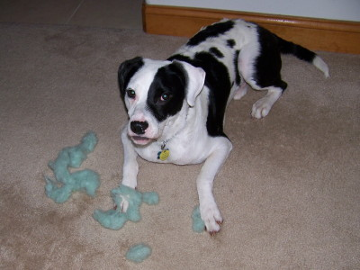 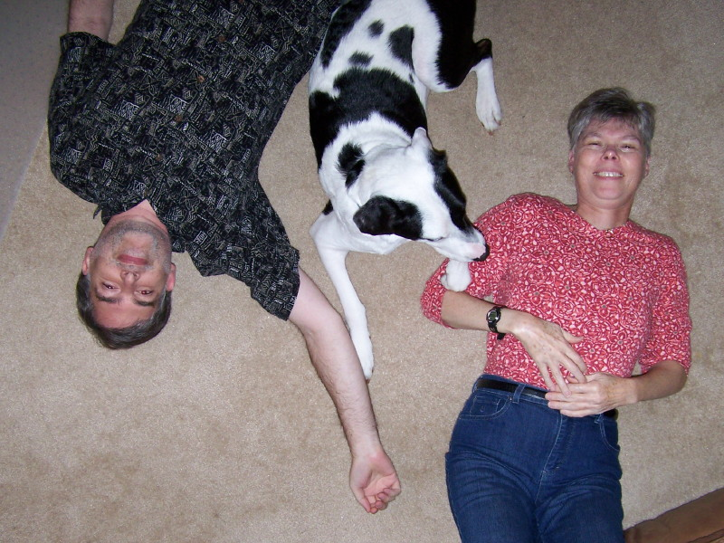
{kind=link}